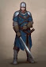
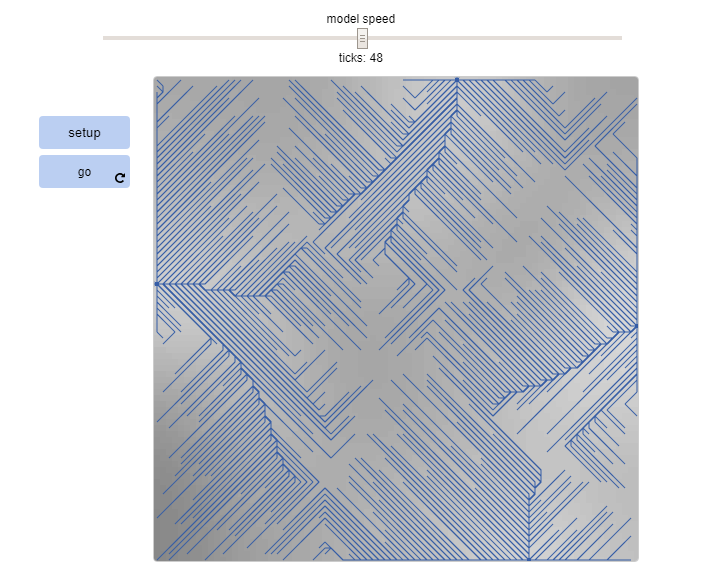

Second Day Scratch Project
Click on the preview to play our Scratch game. A dad must find his son by
going through various obstacle and mazes before his
mom finds out.
App Inventor


Scan QR Code to install our physics calculator. This is a calculator that provides specific
physics equations. Plug in your values for each variable and get the right answer to
your physics homework.
Python Flowchart

Based on the flowchart we create din class, we created a simulation of a quest to find treasure.
You must make all the right decisions
in order to advance through the flowchart and succeed in finding the treasure. Click on swordsman to begin
the simulation.
Python Project


This project was created in order to check if a certain password is secure and safe. If the password doesn't meet
the certain requirements, then a randomly generated password that is secure will be offered as an alternative.
Image Artist


In this project, we chose any image and used a simple algorithm to alter that image in a different way.
The image's
colors that were between a certain assigned spectrum were changed to a lime green, which changed the original image.
GUI Project

In this project, we chose any image and manipulated it by coding a GUI. The GUI allows a certain image to be
manipulated in certain ways.
For example, the size, angle, pattern, and structure of the cow image I chose can be constantly changed for different outcomes.
Python Graph

In this project, took a specific set of data off the internet on the number of deaths caused by natural disasters by year.
The data
was then put through python code that reads the data and transforms it into a scatterplot, making the data easier
and more efficient to read. The y-axis is the number of deaths and the x-axis is the number of years from 1980. The question answered
by the graph is whether or not the number decreased due to better preparation throughout the years
NetLogo Simulation
For this project, we browsed many simulations of different types of scenarios. This example answers the question of how
turtles climb hills or descend into valleys using the uphill, uphill4, downhill, and downhill4 commands.
The same technique is useful for modeling any kind of creature that follows a gradient in its environment.
I then modified the code to change the background color, the magnitude and direction at which the turtles climb, and the color
of the demonstrating lines (red to blue)